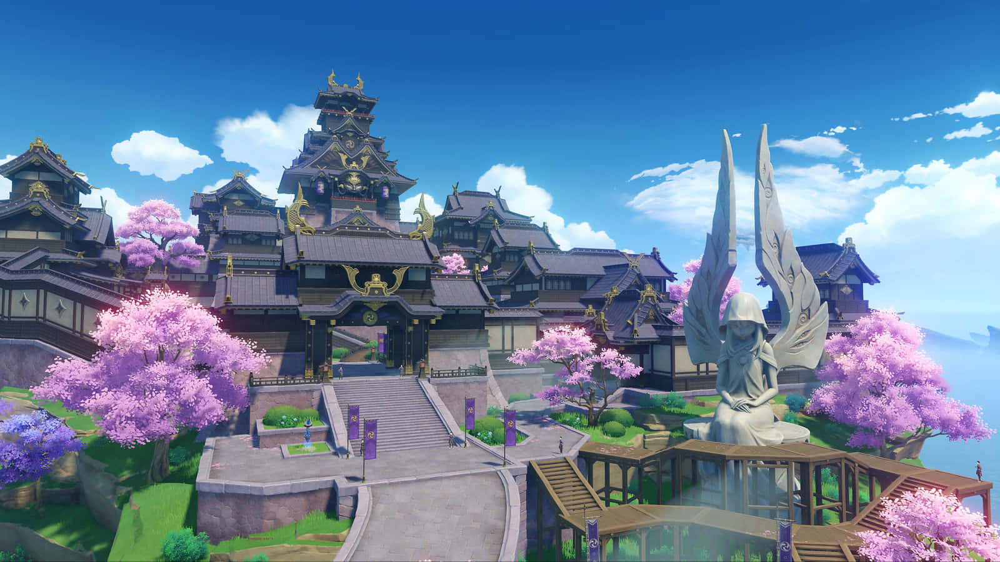

You have arrived in Teyvat — a fantasy world where the seven elements flow and converge.In the distant past, the Archons granted mortals unique elemental abilities. With the help of such powers, people formed a bountiful homeland out of the wilderness. However, 500 years ago, the collapse of an ancient civilization turned the universe upside down... Though the calamity the world suffered has ceased, peace has yet to be restored.
MONDSTADT
A city of freedom that lies in the northeast of Teyvat.
From amongst mountains and wide-open plains, carefree breezes carry the scent of dandelions — a gift from the Anemo God, Barbatos — across Cider Lake to Mondstadt, which sits on an island in the middle of the lake.
NEW! A PLACE WITH HEART
CIDER LAKE
A natural freshwater lake. The lake's wide, crystalline appearance has remained unchanged for eons — so clear you can see the bottom, and cool and refreshing to drink. It is none other than these headwaters that brought Mondstadt's ciders and wines to fame and made the lake the symbol of Mondstadt that it is today
LIYUE
A bountiful harbor that lies in the east of Teyvat. Mountains stand tall and proud alongside the stone forest, that together with the open plains and lively rivers make up Liyue's bountiful landscape, which shows its unique beauty through each of the four seasons. Just how many gifts from the Geo God lie in wait amongst the rocks of Liyue's mountains?
NEW! A PLACE TO SPEND WITH U
HARBOR
The establishment of the harbor kicked off Liyue's seafaring trade. As Teyvat's largest market harbor, the sheer amount of goods that flow to and from it is simply incomparable for other ports. Every year during the Lantern Rite you can see thousands of lanterns ascend into the night sky — a Liyue event that you can't afford to miss.

INAZUMA
An Isolated Archipelago Far East of Teyvat Overcome endless thunderstorms and set foot on the islands of red maple and cherry blossoms. On winding shores and towering cliffs, and in forests and mountains full of secrets, witness the Eternity pursued by Her Excellency, the Almighty Narukami Ogosho.
NEW! A PLACE FOR US
TATARASUNNA, KANNAZUKA
Legend has it that Kannazuka means "the hill where no gods reside." Until now, Kannazuka is disputed territory between the Shogunate and Sangonomiya. Kannazuka has a mountainous terrain with high steep cliffs. In the midst of the rocky outcrops lies Mikage Furnace, the largest smelting facility in Inazuma. This is where Jade Steel is made, a rare material that is used in Inazuma to forge swords
SUMERU
The city of scholars located in the west-central part of Teyvat. A fantastical nation of both lush rainforest and barren desert, where countless fruits of wisdom grow and are buried. Whether Travelers travel from afar through the forest to reach the academy city or delve deep into the desert to discover the historical ruins of the red desert, a wealth of valuable knowledge awaits them here.
NEW! A PLACE FOR OUR MEMORIES
PORT ORMOS
The harbor betwixt the two trees. "Bah! The lectures of the sages are beyond boring. Why don't we get ourselves some fine wine garnished with floral honey and set out on a journey across the seven seas?"